智能手机在经过多年技术发展和良性竞争后，留给厂商们大刀阔斧改动的地方，已经不多了。所以今年以来，手机厂商的新机迭代技术方向，都主打小修小补。
但是话又说回来嚯。
咱们表面上能观察到的风平浪静，并不代表厂商们私下，没有偷偷折腾各种骚技术。
就比如三折叠屏这玩意儿，前几年三星整了个原型机过后便没了后文。
但咱们熟悉的华子。
在今年3月就冷不丁地公布了三折叠屏专利。
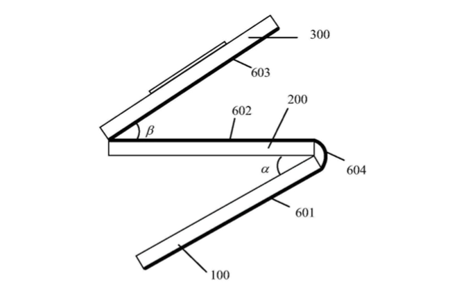
本以为专利转换为量产产品，要等待很长时间。
但从爆料来看，华为三折叠手机在今年内就能量产上市。
当然啦，专利公布时间，与实际研发时间往往是不对等的。
按照前阵子余承东在采访时的“爆料”。
这三折叠手机，华为内部至少就研发了五年。
这也恰恰说明。
 只要厂商们的决心够狠，想法再骚的专利、技术，都有变为实际产品的可能。
只要厂商们的决心够狠，想法再骚的专利、技术，都有变为实际产品的可能。
正好机哥最近上网冲浪。
还真就挖到了不少，厂商们脑洞大开、骚出天际的新专利。
用心跳来解锁手机
机哥最近老是能看到，网上有人讨论手机不同指纹解锁的优势和劣势。
什么超声波指纹解锁天下第一。
什么短焦指纹就该被淘汰抬走。
什么3D人脸解锁但用难回。
要我说，大伙说的都没毛病，都说到了大多数用户的使用痛点上。
但浓眉大眼的果子最近表示：
“我的朋友们，以上这些主流的解锁手机方式都不够无感、体验不够极致。”
于是乎，继Touch ID指纹解锁和Face ID面部解锁之后。
一种全新的、用户未曾设想过的全新解锁技术专利，被苹果曝了出来——
Heart ID
所谓的Heart ID，就是通过检测和验证大伙的心跳数据，来给自己的iPhone、iPad和Mac等设备解锁。
实不相瞒。
机哥刚看到果子这解锁技术专利时，脑子是嗡嗡发懵的。
什么心跳解锁，果子你没活去咬打火机。

但当我找到那份专利，细细品味过后。
我发现这Heart ID还真不是啥强行创新、不着天际的概念。
具体实现原理是酱紫的。
首先每个人的生理状态都是独一无二的，心跳特征也是如此。
甚至和指纹、人脸解锁相比起来。
心跳特征的复制或伪造难度更大，理论安全性也是各种解锁方式中最高的存在。
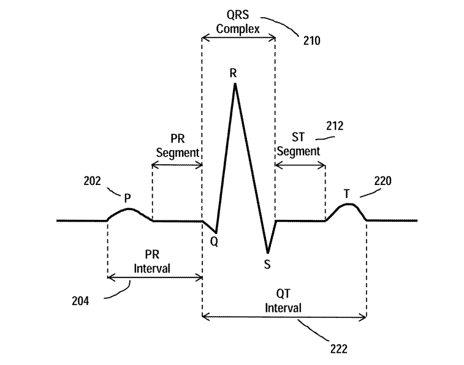
有了这个独一无二、安全性拉满的特征。
果子便想到，自家Apple Watch不就有ECG传感器么。
 那就干脆用手表来收集一波心跳数据，包括心电图、心跳节律等。
那就干脆用手表来收集一波心跳数据，包括心电图、心跳节律等。
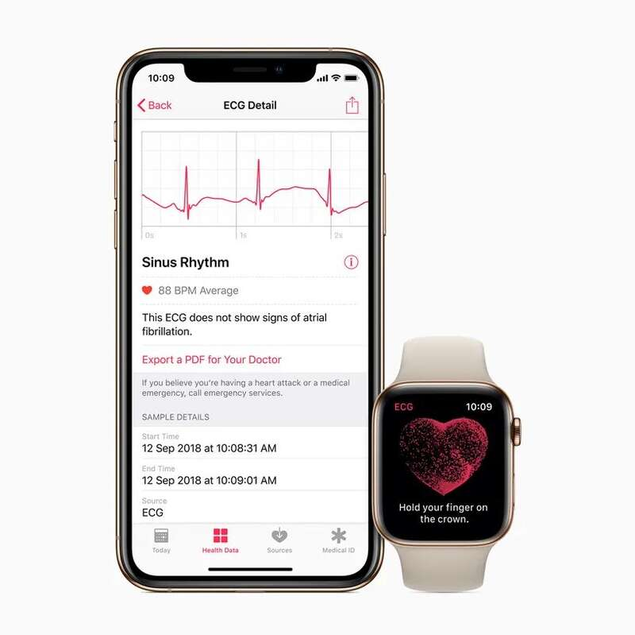
然后再把这心跳数据，加密传输到关联的iPhone、Mac和iPad上，便形成了预置的心跳模式，相当于预先录入了“指纹”。
以后只要一直带着诸如Apple Watch等，能检测心脏活动的设备。
手机和监测设备就会无时无刻，持续进行心跳数据的检测、传输和验证。
落实到用户体验。
就是不用输入密码、验证人脸，即可直接解锁手机。
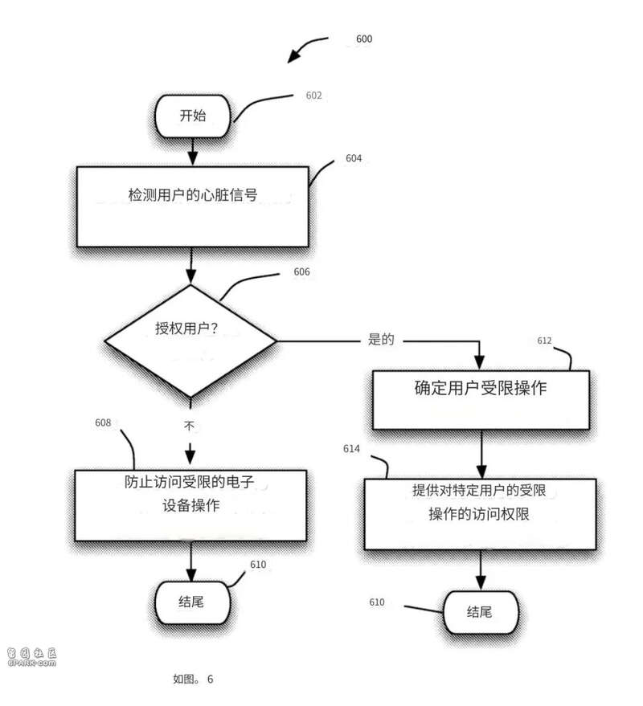
说白了，利用心跳数据来解锁手机有两大优势。
一来，解锁速度更快且无感。
 二来，心跳模式独一无二又难以复制，安全性非常滴高。
二来，心跳模式独一无二又难以复制，安全性非常滴高。
哪怕是一些专业领域，这技术也有很多施展拳脚的地方。
比如给飞行员配备“心跳特征”收集设备，一旦他喝了酒或者吃了药，那肯定是不适宜开飞机的嘛。
这时候设备就能发出警报：
哥们喝了酒开什么飞机啊，滚回家休息！
当然果子也很清楚，不是所有人都会额外买一个，监测心跳数据的设备。
所以在专利描述中，我还看到果子在研究一种——
只需正常握住iPhone，即可使用心跳数据进行身份验证的设计。
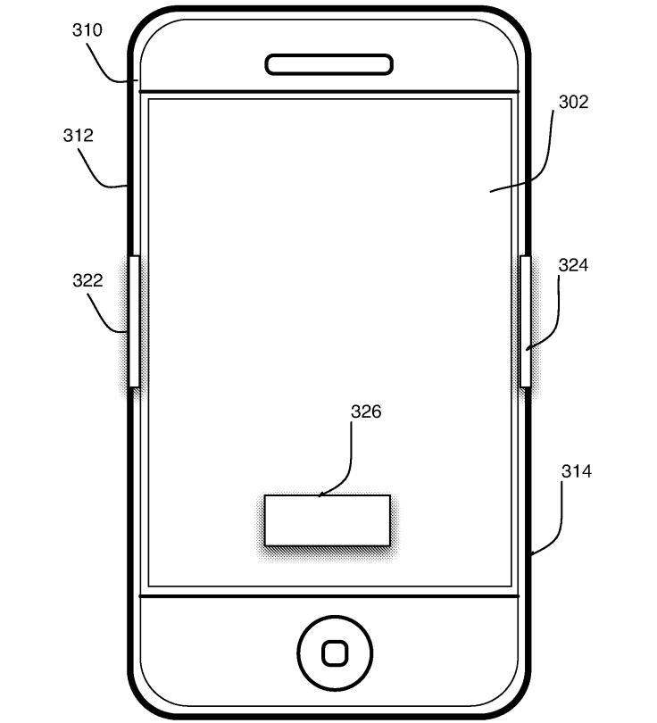
如此捋下来，果子这波解锁技术专利用途非常广泛。
就看它啥时候能把技术落地，并快速推广到自家设备上了。
检测驾驶员疲劳状态
在芯片算力日益增长的今天。
就连车机芯片的跑分都能轻松突破百万。
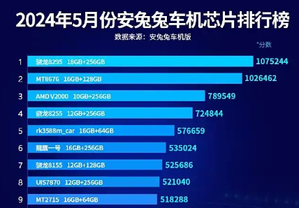
那既然车内芯片的算力如此充足。
不用它来干点不同寻常的事，无疑是对算力资源的巨大浪费。
所以机哥最近看到，小米和华为都在用车内硬件搭配自家算法，做出了检测驾驶员状态的技术专利。
先从华子开始说起。
华子的方案是利用车载传感器，获取驾驶员的头部姿态、视线角度、打哈欠次数和闭眼时长等信息。
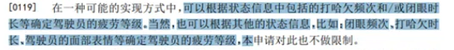
再利用自家的一套算法，来评估驾驶员的疲劳状态。
诶，要是识别到你疲劳驾驶了，困了累了。
系统会自动调节智驾的策略，提高长时间驾驶的安全性。
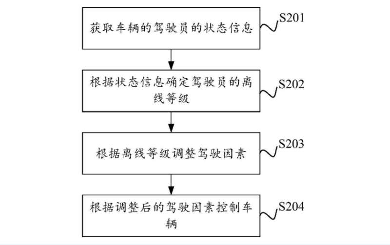
小米和华为的技术方案殊途同归。
都是检测驾驶员疲劳状态，来提升驾驶安全性。
不过在具体原理上，两者的差异还蛮大的。
小米的方案是用一系列车内传感器，来计算驾驶员瞳孔直径和虹膜直径之间的比例。
很多相关论文都表明，在光照稳定的情况下，瞳孔的直径变化能直接反映人体的疲劳程度。
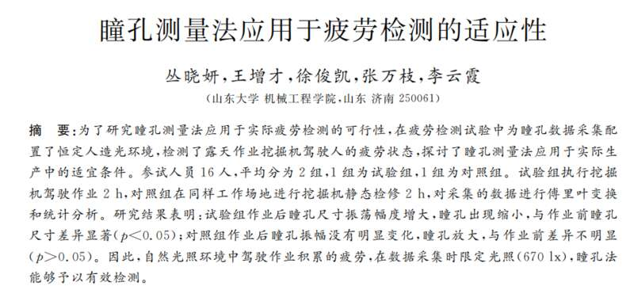
所以理论上来说。
阿米这套方案会比传统的、基于眨眼频率的检测方法更高效，对硬件算力的要求也更低。
 要是以后真落地了，很多配置比较低的车机系统都能用上。
要是以后真落地了，很多配置比较低的车机系统都能用上。
当然啊，以上所提到的专利，只是近期厂商们发布过的、比较新鲜的专利。
要是再把时间往前推。
大伙会发现，大厂产品经理们的灵感，是真™的丰富。
比如机哥之前浅浅提到过的——
华为手机显微镜专利
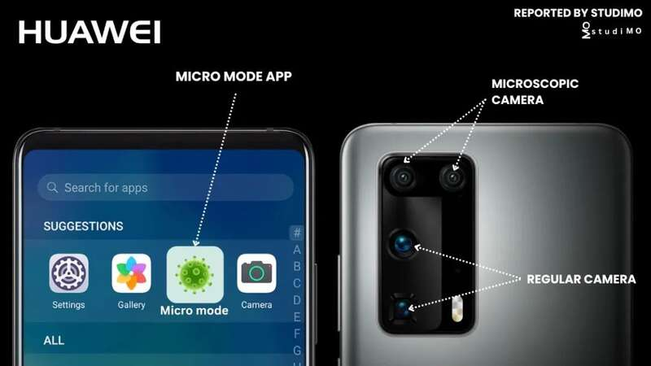
在该技术的加持下，手机镜头和被拍摄物体的距离，可以保持在5毫米以内，并且放大20 – 400倍。
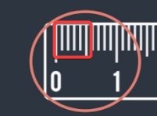
这也意味着，咱们无需硕大的肌肉、激情的拍摄。
就可以拍到微观世界里的细菌、螨虫和各种微生物。
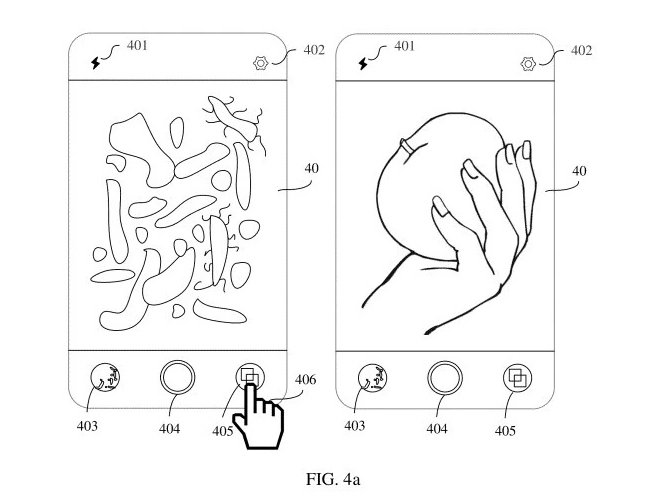
又比如在2022年9月。
奇瑞还公开了一项，名为“汽车分离式弹射座椅及车辆”的专利。
专利摘要里写得很清楚。
当汽车发生激烈碰撞时，座椅能直接把人弹出车内，避免车毁人亡。
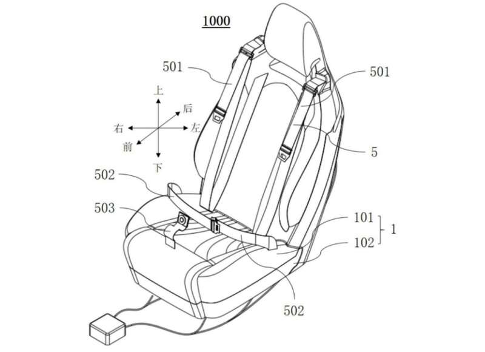
不过机哥觉得，这只能保证人不会凉在车内。
至于弹出去后的存活率，并不在专利的考虑范围内。
讲道理，相比于弹射起步带来的“快感”。
机哥还是更倾向于平平淡淡才是真。
像是三星最近公布的“卷轴屏幕+物理键盘”专利，看起来有搞头得多。
平时不用就卷起来，主打一个便携。
要办公时再展开屏幕，配合键盘处理文档和上网查资料。
要是再搭载个Windows系统，生产力不妥妥吊打一众安卓板子？
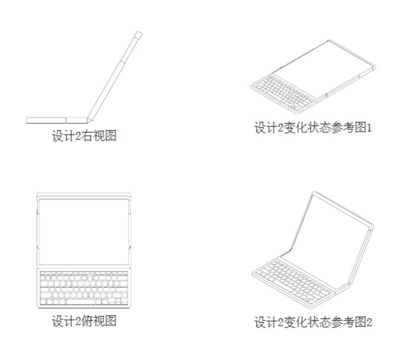
话说回来，机哥也很清楚专利归专利。
它和实际落地产品之间，还隔着相当遥远的距离。
有的技术专利甚至会被一辈子雪藏，仅仅被用于提前占坑。
但有时候吧。
看着厂商们捣鼓出一些新鲜好玩的技术储备，还真的比新机发布、参数比拼有意思。
咱就拿好瓜子，看着大厂们继续秀操作吧。